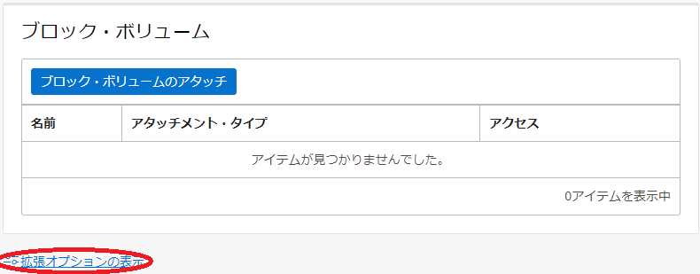
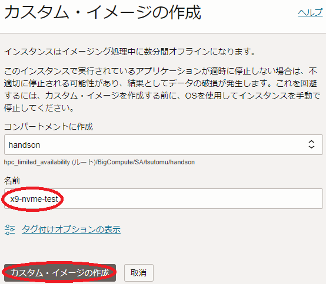

ノード数が多くなるHPCクラスタやGPUクラスタの計算/GPUノードは、デプロイ時に実施するOSカスタマイズをどのように行うのが効果的でしょうか。
本テクニカルTipsは、計算/GPUノードデプロイ時のOSカスタマイズ方法の選択肢と、それぞれの利用方法について解説します。
0. 概要
HPCクラスタやGPUクラスタの計算/GPUノードは、ノード数が数十ノードから時には数百ノードになることもあり、これらのOSに自身の環境に合わせたカスタマイズを加える際、どのような手法を採用するのが最も効果的かという観点で考慮する必要があります。
OCIでこれらのカスタマイズを加えるための代表的な選択肢は、以下が挙げられます。
-
Ansible
RedHat社が開発するオープンソースの構成管理ツールで、YAML形式で記述されたPlaybookの情報を元に、ターゲットノードの構成管理を管理ノードからSSHで実行します。
Playbookは、条件分岐や反復処理を記述することが可能で、cloud-initやカスタム・イメージと比較して複雑な構成管理処理を実現することが可能です。 - cloud-init
- カスタム・イメージ
下表は、これらの選択肢をいくつかの評価基準から比較しており、これらの特徴をふまえて自身のOSカスタマイズ要件にあった手法を選定します。
| Ansible | cloud-init | カスタム・イメージ | 備考 | |
|---|---|---|---|---|
| 難易度 | 高(*1) | 中(*2) | 低 | *1) 管理ノード構築要 Playbook・インベントリファイル等構文習得要 *2) cloud-config構文習得要 |
| カスタマイズ柔軟性 | 高(*3) | 中(*4) | 低(*5) | *3) 条件分岐や反復を使用した柔軟なカスタマイズ可 *4) 様々なモジュールを使用した柔軟なカスタマイズ可 *5) 作成時に適用されているカスタマイズに限定 |
| デプロイ時カスタマイズ | 必要 | 必要 | 不要(*6) | *6) カスタマイズ適用済のためデプロイ時間短縮可 |
以上を踏まえて次章以降は、cloud-initとカスタム・イメージを使用した計算/GPUノードのOSカスタマイズの手順を解説します。
なおAnsibleは、オープンソースでインターネットから様々な情報を入手することが可能なため、ここでは解説しません。
1. cloud-initを使用したOSカスタマイズ
1-0. 概要
cloud-init を使用した計算/GPUノードのOSカスタマイズは、以下の手順で実施します。
- cloud-init設定ファイル（cloud-config）作成
- cloud-configを指定した インスタンス構成 作成
- インスタンス構成を指定した クラスタ・ネットワーク 作成
- cloud-init完了確認
1-1. cloud-conifg作成
本章は、OSカスタマイズの内容に沿った cloud-init 設定ファイル（cloud-config）を作成します。
以下は、BM.Optimized3.36向けに以下のカスタマイズを適用するためのcloud-config例で、OCIコンソールを実行している端末上にテキストファイルで保存します。
- NVMeローカルディスクファイルシステム作成
- クラスタ・ネットワーク 接続用ネットワークインターフェース起動
#cloud-config
runcmd:
#
# Mount NVMe local storage
- parted -s /dev/nvme0n1 mklabel gpt
- parted -s /dev/nvme0n1 -- mkpart primary xfs 1 -1
# To ensure partition is really created before mkfs phase
- sleep 60
- mkfs.xfs -L localscratch /dev/nvme0n1p1
- mkdir -p /mnt/localdisk
- echo "LABEL=localscratch /mnt/localdisk/ xfs defaults,noatime 0 0" >> /etc/fstab
- mount /mnt/localdisk
#
# Set up cluster network interface
- systemctl start oci-rdma-configure
1-2. インスタンス構成作成
本章は、先に作成したcloud-configを使用して インスタンス構成 を作成します。
インスタンス構成を作成する際のcloud-config指定は、OCIコンソールのインスタンス構成作成画面で以下 拡張オプションの表示 ボタンを選択し、

表示される以下 管理 フィールドで cloud-initスクリプト フィールドに作成したcloud-configを選択（ 参照 ボタンでファイルを選択）します。
1-3. クラスタ・ネットワーク作成
本章は、先に作成した インスタンス構成 を使用して クラスタ・ネットワーク を作成します。
クラスタ・ネットワークを作成する際のインスタンス構成指定は、OCIコンソールのクラスタ・ネットワーク作成画面で表示される以下 インスタンス・プール の構成 フィールドで、 インスタンス構成 メニューに先に作成したインスタンス構成を選択します。
1-4. cloud-init完了確認
cloud-init は、適用したインスタンスが起動してSSHログインできる状態であっても、その処理が継続している可能性があるため、以下コマンドを当該インスタンスのrootで実行し、ステータスが done となっていることでcloud-initの処理完了を確認します。
ステータスが running の場合は、cloud-initの処理が継続中のため、処理が完了するまで待ちます。
> cloud-init status
status: done
2. カスタム・イメージを使用したOSカスタマイズ
2-0. 概要
カスタム・イメージ を使用した計算/GPUノードのOSカスタマイズは、以下の手順で実施します。
- カスタム・イメージ作成用インスタンス起動
- カスタマイズ適用
- カスタム・イメージ使用時問題となる設定修正
- カスタム・イメージ取得
- カスタム・イメージを指定した インスタンス構成 作成
- インスタンス構成を指定した クラスタ・ネットワーク 作成
2-1. カスタム・イメージ作成用インスタンス起動・カスタマイズ適用
本章は、 カスタム・イメージ を作成するためのインスタンスを起動します。
通常カスタム・イメージを作成する場合、組み込むカスタマイズの内容が正しく動作しているかを確認する必要があるため、最終的に構築するHPCクラスタやGPUクラスタの規模のみを縮小した同一構成のものを使用します。
例えば、16ノードのクラスタ構築に使用するカスタムイメージであれば、同じシェイプとOSを使用した2ノードのクラスタをデプロイします。
この手順は、 OCI HPCチュートリアル集 の HPCクラスタを構築する(基礎インフラ手動構築編) や GPUクラスタを構築する(基礎インフラ手動構築編) が参考になります。
このクラスタがデプロイ出来たら、必要なカスタマイズを適用してその動作を確認します。
2-2. カスタム・イメージ使用時問題となる設定修正
本章は、 カスタム・イメージ を使用してクラスタをデプロイする際に問題となる設定を、カスタム・イメージ取得前に除去します。
問題となる設定で代表的なものは、以下の2項目です。
-
NVMeローカルディスク領域ファイルシステム設定
HPC用途のベアメタルインスタンスに搭載されるNVMeローカルディスクは、カスタム・イメージを使用する場合でも、デプロイ時にファイルシステムとしフォーマットしマウントする必要があります。
このため、カスタム・イメージ取得前にこのファイルシステム設定を削除し、カスタム・イメージを使用してインスタンスをデプロイする際に改めてこの設定を追加します。 -
クラスタ・ネットワーク 用ネットワークインターフェース設定
クラスタ・ネットワークのネットワークインターフェース設定は、カスタム・イメージ取得インスタンス用の静的IPアドレスを含んでおり、そのままカスタム・イメージを取得すると、これを使用してデプロイしたインスタンスで全て同じIPアドレスが設定され、クラスタ・ネットワークに接続することが出来ません。 このため、カスタム・イメージ取得前にこのネットワークインターフェース設定を削除し、カスタム・イメージを使用してインスタンスをデプロイする際に改めてこの設定を追加します。
以上より、カスタム・イメージ取得前に以下の修正を適用します。
- /etc/fstab 内NVMeローカルディスク用ファイルシステム設定コメント化
- /etc/sysconfig/network-scripts/ifcfg-ens800f0 削除
なお、カスタム・イメージによるクラスタデプロイ時にここで削除した設定を適用し直すには、 cloud-initを使用したOSカスタマイズ の手法を使用することが出来ます。
2-3. カスタム・イメージ取得
本章は、 カスタム・イメージ 取得用インスタンスでカスタム・イメージを取得します。
カスタム・イメージの取得は、当該インスタンスの以下 インスタンスの詳細 ページで 他のアクション プルダウンメニューから カスタム・イメージの作成 メニューを選択し、
表示される以下画面で 名前 フィールドにカスタム・イメージに付与する名前を指定し、 カスタム・イメージの作成 ボタンをクリックします。

なお、カスタム・イメージ取得中は、当該インスタンスが停止します。
2-4. インスタンス構成作成
本章は、先に作成したカスタム・イメージを使用して インスタンス構成 を作成します。
インスタンス構成を作成する際のカスタム・イメージ指定は、OCIコンソールのインスタンス構成作成画面の以下 イメージとシェイプ フィールドで イメージの変更 ボタンをクリックし、
表示される以下 イメージの選択 サイドバーで マイ・イメージ を選択し表示される先に作成したカスタム・イメージを選択し イメージの選択 ボタンをクリックします。
2-5. クラスタ・ネットワーク作成
本章は、先に作成した インスタンス構成 を使用して クラスタ・ネットワーク を作成します。
クラスタ・ネットワークを作成する際のインスタンス構成指定は、OCIコンソールのクラスタ・ネットワーク作成画面で表示される以下 インスタンス・プール の構成 フィールドで、 インスタンス構成 メニューに先に作成したインスタンス構成を選択します。